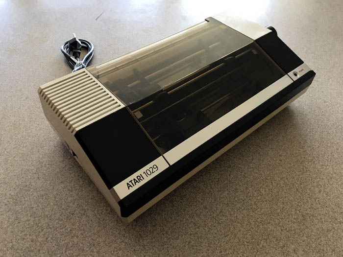
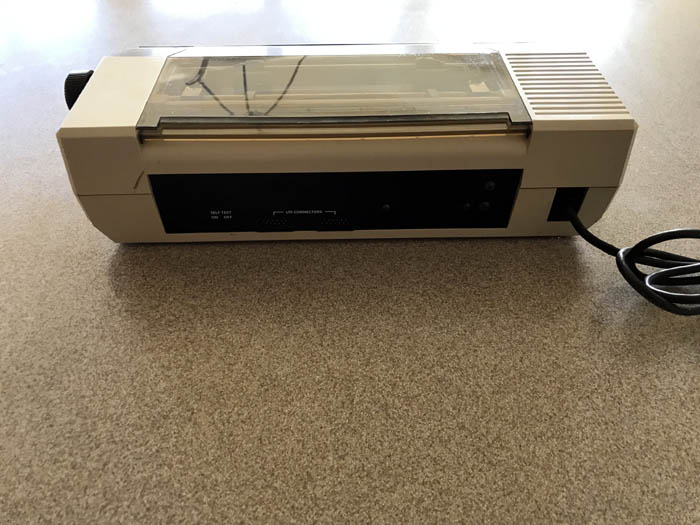

|
The Atari 1029
Developed in 1984, the Atari 1029 was an
80 Column Printer with fan folder sheet feeder as was as
friction feed of paper.

Most appear to have been developed for
the UK/Europe market, however Atari seems to have initially
intended the printer for the US market as well as a
prototype unit with 110v AC power supply was located.

|